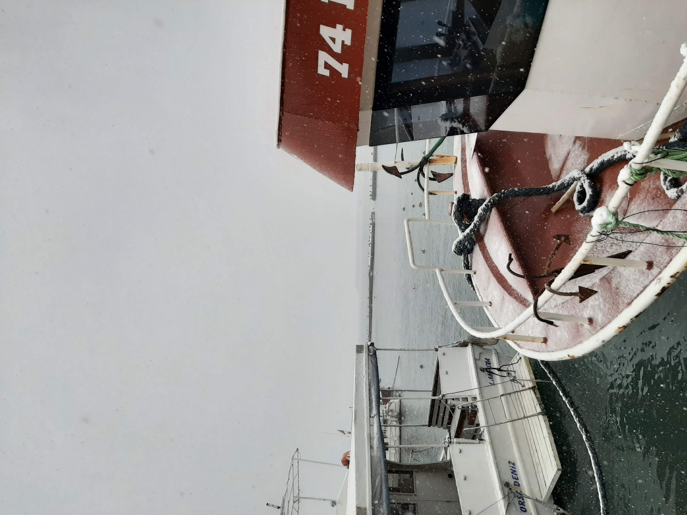
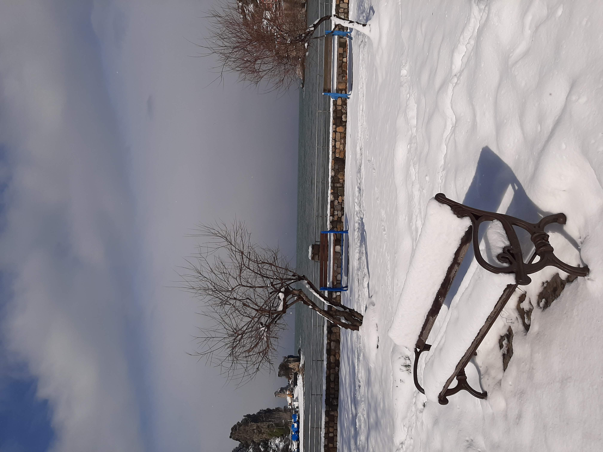

BARTIN-AMASRA

AMASRA. Kesinlikle gidilmesi gereken yerlerden biri.

Sahiliyle yeşil doğasıyla enfes bir birleşime sahip.

Kış ayında gitsek de bu uyum şahaneydi. Bence her mevsim gidilmesi gereken bir ilçe.

Biz kendimizi adada gibi hissettik. Şu manzaraya bakıın.

Bartın merkezde bulduğumuz güzel yapılmış bir Berliner. Denemeyen kaldı mıı??

Burası da balık ekmeğimizi aldığımız güzel bir mekan. Manzarası Karadeniz :))